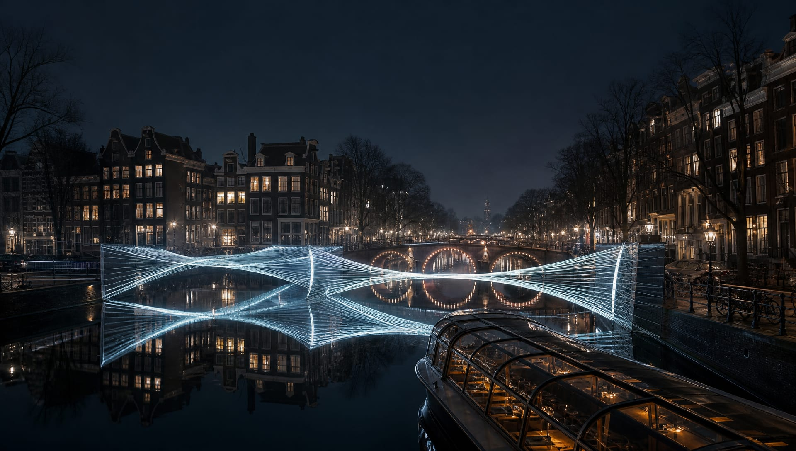
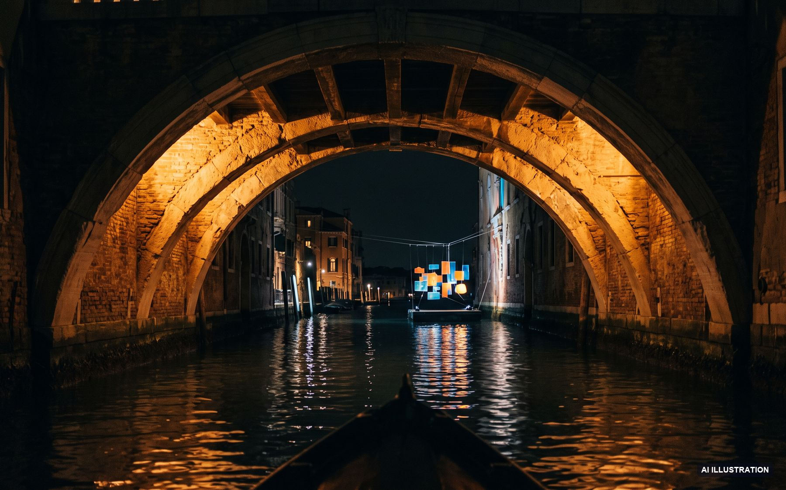
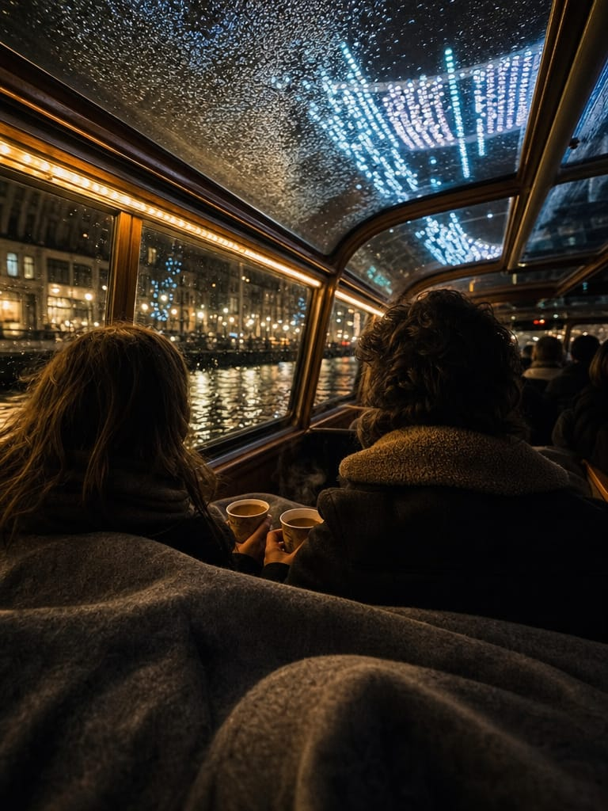

Stichting Amsterdam Light Festival — 15th edition
A winter of light on the water
20 artworks — 26 Nov 2026 to 17 Jan 2027 — nightly 17:00 to 23:00
The festival
Fifteen editions in, the festival runs 26 November 2026 – 17 January 2027. Light works are placed on the water, the bridges and the quays of the old centre, and the city walks and sails past them. The line-up, the theme and the exact route are published closer to the opening, so we state only what is known and label everything else as ours.
Walking the route is free and always open. The works are made to be seen from the water — low, slow, moving through the light instead of past it.
Sail the route15th
Edition
~20
Works expected
Free
To walk the route
Live
Prices on this page
Our illustrations
Twenty images, made by us with AI in the festival's language of light: the works, the water, the bridges. They are illustrations — not photographs of real installations, and they stand nowhere on the canals. The 2026/27 line-up is not published yet; the festival announces it closer to the opening.
Viator & GetYourGuide
Every Light Festival cruise we could find on either platform, side by side: the price each one shows, the dates it sails, and a direct line to the operator’s own booking page. We take no bookings ourselves and both platforms are shown the same way.

Ticketed — 75 or 95 minutes
Open sloop · glass-roof boat · historic salon boat
Practical
What is free, what a cruise includes, and what to check on the operator's page before you pay.

No. All 20 artworks stand in public space and the walking route is free, every night from 17:00 to 23:00. You only need a ticket to see the route from the water — that is the canal cruise.
Choosing a cruise hands you to the operator's own booking page — that is where the booking and the payment happen.
Contact
An independent guide to the festival, built as a demo. We sell nothing and answer nothing on the festival's behalf.
Images
AI-generated illustrations, made for this guideThis site
A demo build — not the festival office, and no ticket desk hereBooking questions go to the operator you booked with; their contact is on your confirmation. Group bookings, press and accreditation are handled by the festival and the operators themselves.